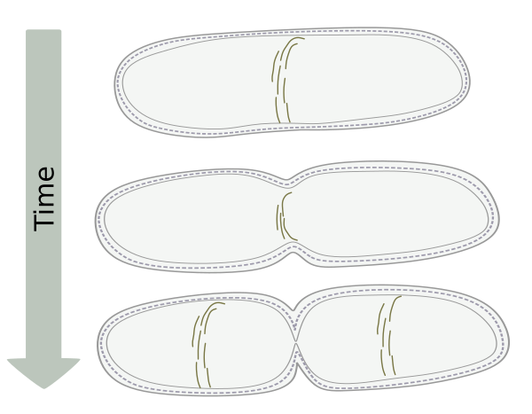
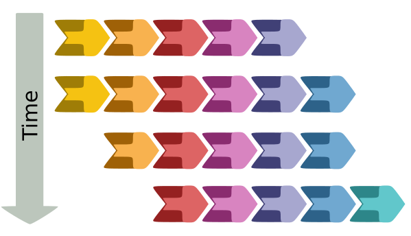

Recent Biomedical Engineering PhD graduate with a passion for modeling complex biochemical reactions.
FtsZ is a bacterial cell division protein. It lines up head to tail to form single stranded protofilaments (PFs). These PFs gather at the mid cell to produce the Z ring. The Z ring constricts to divide the cell into two daughter cells.
Over the past two decades, it has become increasingly clear that FtsZ treadmills. Treadmilling is when subunits primarily add to one side and subtract from the other side of a PF. This produces an overall net movement of the PF, but individual subunits remain in place.
It was not immediately clear how a single stranded PF could attain such polarity to directionally treadmill. I developed a computational model that showed that directional treadmilling can be obtained with 1) a conformational switch within individual FtsZ subunits and 2) stochastic GTP hydrolysis. Furthermore, nucleation of new PFs can also be explained with this conformational switch.